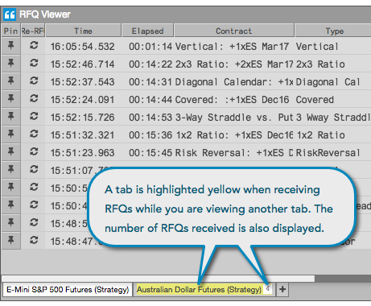

Tabs are available in the RFQ Viewer to allow you to monitor multiple products for RFQs within a single widget. You can add a tab for each product or you can change the product on an existing tab.
For more information about using tabs, refer to Managing Tabs.
Monitoring RFQs for multiple products
When using multiple tabs, the tab(s) you are not viewing will be highlighted yellow to indicate when new RFQs have been received. This tab will also display the number of new RFQs received since you last viewed the product on that tab.

Changing products in the RFQ Viewer
The RFQ Viewer displays RFQs for one product per tab in the viewer. You can change the product on a tab by using the Change Product... option on the tab's context menu.
To change products in the RFQ Viewer:
Right-click a tab in the RFQ Viewer and click Change Product....

Search for a product or click Explore to find a product in the Market Explorer.
The tab now displays instruments that have RFQs for the selected product.